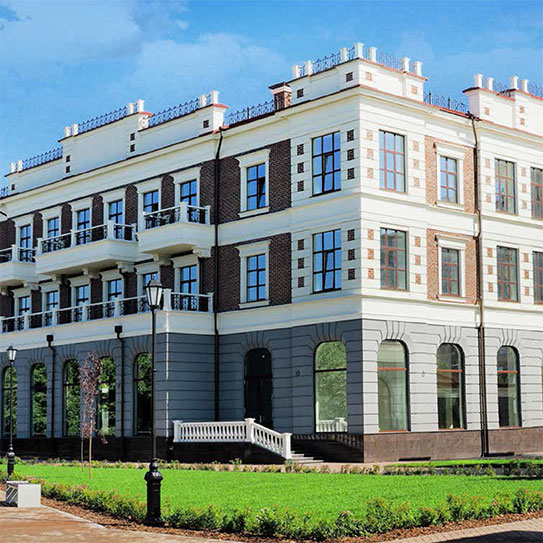
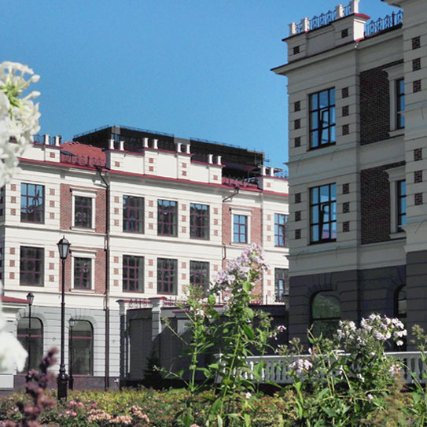
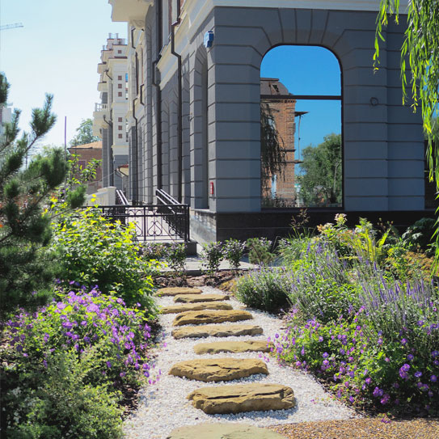

Екатеринбург был основан как столица горнозаводского края и стал не только крупным промышленным городом, но и стратегическим центром,соединяющим европейскую и азиатскую часть нашей страны. За годы своего развития он прошёл длинный путь и превратился в один из крупнейших и красивейших городов России.Историю края всегда пишут люди. Именно благодаря им – инициативным, масштабным, решительным предпринимателям и градоначальникам – возможно было движение вперед. Масштаб их личностей и достижений стал отправной точкой для создания проекта – «Избранные. Особняки на набережной».Комплекс элегантных особняков в центре города создан служить достойным обрамлением для воплощения самых грандиозных замыслов, идеальным местом для размещения резиденции вашей компании.
«Избранные» – это ансамбль изящных особняков в неоклассическом стиле с собственным ландшафтным парком. Фасады из красного кирпича привлекают внимание чистотой линий, а мансардный этаж придаёт законченность архитектурному облику. Элегантный дизайн фасадов заключается в утонченности форм, от которых веет роскошью и благородством.Строгая изысканность архитектуры зданий подчеркивается продуманными деталями: витражным остеклением арочных окон, оригинальными коваными решетками, лестницами, выполненными из натурального камня.
Каждый особняк располагает собственным подземным паркингом. Въезды гармонично вписаны в окружающую территорию и не нарушают общие архитектурно-ландшафтные решения. Современные инженерные системы обеспечивают безопасные и комфортные условия для работы:
Из окон открывается прекрасный умиротворяющий вид на Дендрологический парк и реку Исеть, который позволяет отвлечься от интенсивного течения жизни и немного побыть наедине с собой и своими мыслями в поисках новых идей для развития. Находясь в самом центре города, у собственников и гостей особняков есть уникальная возможность насладиться прогулкой по своему парку с безукоризненными газонами и пышными цветочными клумбами, расположенными на набережной реки.
